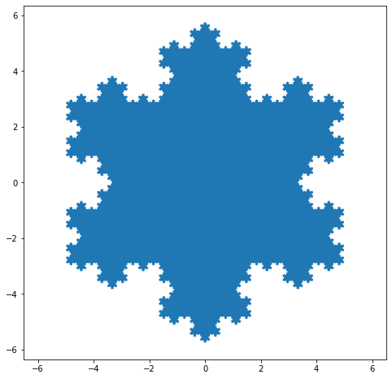
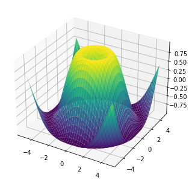

Graphical and Data messing around¶
import numpy as np
import pandas as pd
np.random.seed(24)
df = pd.DataFrame({'A': np.linspace(1, 10, 10)})
df = pd.concat([df, pd.DataFrame(np.random.randn(10, 4), columns=list('BCDE'))],
axis=1)
df.iloc[3, 3] = np.nan
df.iloc[0, 2] = np.nan
def color_negative_red(val):
"""
Takes a scalar and returns a string with
the css property `'color: red'` for negative
strings, black otherwise.
"""
color = 'red' if val < 0 else 'black'
return 'color: %s' % color
def highlight_max(s):
'''
highlight the maximum in a Series yellow.
'''
is_max = s == s.max()
return ['background-color: yellow' if v else '' for v in is_max]
df.style.\
applymap(color_negative_red).\
apply(highlight_max).\
set_table_attributes('style="font-size: 10px"')
| A | B | C | D | E | |
|---|---|---|---|---|---|
| 0 | 1.000000 | 1.329212 | nan | -0.316280 | -0.990810 |
| 1 | 2.000000 | -1.070816 | -1.438713 | 0.564417 | 0.295722 |
| 2 | 3.000000 | -1.626404 | 0.219565 | 0.678805 | 1.889273 |
| 3 | 4.000000 | 0.961538 | 0.104011 | nan | 0.850229 |
| 4 | 5.000000 | 1.453425 | 1.057737 | 0.165562 | 0.515018 |
| 5 | 6.000000 | -1.336936 | 0.562861 | 1.392855 | -0.063328 |
| 6 | 7.000000 | 0.121668 | 1.207603 | -0.002040 | 1.627796 |
| 7 | 8.000000 | 0.354493 | 1.037528 | -0.385684 | 0.519818 |
| 8 | 9.000000 | 1.686583 | -1.325963 | 1.428984 | -2.089354 |
| 9 | 10.000000 | -0.129820 | 0.631523 | -0.586538 | 0.290720 |
import numpy as np
import matplotlib.pyplot as plt
def koch_snowflake(order, scale=10):
"""
Return two lists x, y of point coordinates of the Koch snowflake.
Parameters
----------
order : int
The recursion depth.
scale : float
The extent of the snowflake (edge length of the base triangle).
"""
def _koch_snowflake_complex(order):
if order == 0:
# initial triangle
angles = np.array([0, 120, 240]) + 90
return scale / np.sqrt(3) * np.exp(np.deg2rad(angles) * 1j)
else:
ZR = 0.5 - 0.5j * np.sqrt(3) / 3
p1 = _koch_snowflake_complex(order - 1) # start points
p2 = np.roll(p1, shift=-1) # end points
dp = p2 - p1 # connection vectors
new_points = np.empty(len(p1) * 4, dtype=np.complex128)
new_points[::4] = p1
new_points[1::4] = p1 + dp / 3
new_points[2::4] = p1 + dp * ZR
new_points[3::4] = p1 + dp / 3 * 2
return new_points
points = _koch_snowflake_complex(order)
x, y = points.real, points.imag
return x, y
x, y = koch_snowflake(order=5)
plt.figure(figsize=(8, 8))
plt.axis('equal')
plt.fill(x, y)
plt.show()

import matplotlib.pyplot as plt
import numpy as np
x = np.linspace(0, 2, 100)
# y = np.linspace(2,0,100)
fig, ax = plt.subplots() # Create a figure containing a single axes.
ax.plot(x, np.sin(2*np.sin(2*np.sin(2*np.sin(x)))), label='quadratic')
[<matplotlib.lines.Line2D at 0x1c740217e50>]
import numpy as np
import matplotlib.pyplot as plt
from matplotlib import cm
from mpl_toolkits.mplot3d import Axes3D
X = np.arange(-5, 5, 0.25)
Y = np.arange(-5, 5, 0.25)
X, Y = np.meshgrid(X, Y)
R = np.sqrt(X**2 + Y**2)
Z = np.sin(R)
fig = plt.figure()
ax = Axes3D(fig, auto_add_to_figure=False)
fig.add_axes(ax)
ax.plot_surface(X, Y, Z, rstride=1, cstride=1, cmap=cm.viridis)
plt.show()
